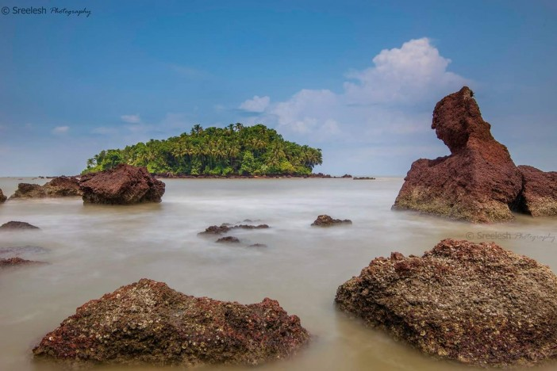

Kannur is one among the northernmost districts in the south western state of Kerala in India. With the Western Ghats in the east and lakshadweep sea in the west, kannur district is bounded by a wealth of natural beauty. Kannur is blessed with natural beaches, hill stations, rivers, backwaters, historical monuments and religious centres. The district itself which shares much of the natural splendour has been a key contributor to the cultural, religious, political and industrial heritage of the state. In addition, Kannur enjoys the credit of having been the cradle of many a colourful folk art and folk music of Kerala. Kannur is rightly described as “The land of Looms and Lores”. Kannur is well known for its handlooms.

The Arakkal Museum in Kannur city is one of the most significant and frequently visited attractions of the south that celebrates the memory and grandeur of Kerala's only Muslim royal family- the Arakkal Ali Rajas. This museum is a testimony to the impeccable Muslim architecture and design.
The Muzzhapilangad Drive-in Beach at Kannur is one referred to with many superlatives- as the longest drive-in beach in the whole of India, as one of the cleanest beaches of Kannur and most importantly, as one of the best drive-in beaches that the entire Asian continent has to offer.

Payyambalam beach is a beautiful spot located in the district of Kannur. The impeccably unspoilt Payyabalam beach is adorned with sparkling pearls of golden sand and foamy white waves of the Arabian Sea. The highlight of Kannur, it has an incredibly peaceful and inviting aura.

St Angelo's Fort is one of the most popular attractions of Kannur and for more reasons than one. The polished yet prehistoric structure of this fortress oozes with unadulterated elegance and overwhelming power. Standing ashore in the Arabian sea, it enjoys a panoramic view.
At a distance of about 15 km from Kannur is the town of Peralassery, known for its Peralassery Subrahmanya Temple. It is believed that on their way to Lanka to free Goddess Sita, Lord Ram and Lord Laxman, stopped at the temple for a while and they left a bangle here.